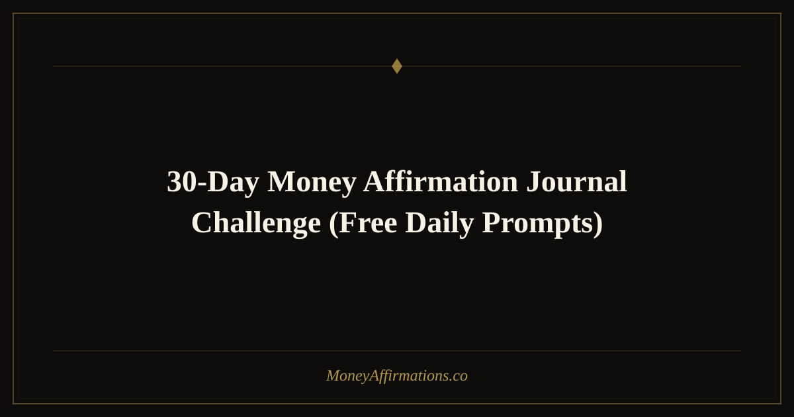

30-Day Money Affirmation Journal Challenge: Free Daily Prompts

Thirty days is exactly the length of time researchers suggest it takes to begin shifting a deeply held belief. Combine that timeframe with daily journaling — one of the most powerful tools for self-reflection and subconscious integration — and you have a genuine financial mindset transformation framework. This challenge pairs a unique affirmation with a journaling prompt for each of the 30 days, taking you through a structured arc: from releasing old money stories in week one, to building new wealth identity in weeks two and three, to anchoring abundance as your natural state by week four. All you need is this guide, a pen, a notebook, and five to ten minutes each day. Start on any date. Return to it as often as you need. Each time you complete the 30 days, you go deeper.
What are money affirmations?
Money affirmations are deliberate, present-tense, first-person statements about your financial reality that you repeat intentionally to reshape subconscious programming around wealth. When combined with journaling, they become even more powerful because writing activates different areas of the brain than speaking or reading alone, creating richer, more durable neural encoding. The 30-day structure below uses progressive disclosure — each week builds on the last — to take you from awareness of your current beliefs all the way through to embodying a new, abundant financial identity. This is not a passive practice. It asks you to engage, question, and commit.
30 journal-style daily affirmation prompts
- Day 1: I am ready and willing to transform my relationship with money starting today.
- Day 2: I honestly acknowledge my current money story without judgment or shame.
- Day 3: I release every belief that tells me I am not good enough for wealth.
- Day 4: I forgive myself for every financial mistake I have made and I move forward freely.
- Day 5: I release the financial patterns I inherited and I choose new ones consciously.
- Day 6: I am grateful for every dollar that has ever moved through my life.
- Day 7: I complete week one stronger, clearer, and more financially aware than I began.
- Day 8: I am building a new and empowered identity as someone who creates lasting wealth.
- Day 9: I am disciplined, focused, and consistent in my financial habits.
- Day 10: I believe that financial abundance is genuinely available to me right now.
- Day 11: I see myself clearly as a wealthy, generous, and financially free person.
- Day 12: I make decisions from a place of financial confidence and inner clarity.
- Day 13: I attract people, ideas, and resources that multiply my wealth naturally.
- Day 14: I celebrate two weeks of progress and I feel the momentum building within me.
- Day 15: My income is expanding and I am fully prepared to receive and manage it well.
- Day 16: I am open to earning money in new and creative ways I have not yet imagined.
- Day 17: Every challenge I face financially contains a lesson that makes me stronger and wiser.
- Day 18: I invest in myself and my financial education with confidence and enthusiasm.
- Day 19: My net worth grows steadily and I take great joy in watching my wealth compound.
- Day 20: I am surrounded by abundance and I recognize it in every area of my life.
- Day 21: I have crossed the 21-day mark and my new money mindset is taking root permanently.
- Day 22: Financial freedom is not just possible for me — it is already in motion.
- Day 23: I give generously from my overflow and that generosity multiplies back to me.
- Day 24: I am at peace with money, debt, and the entire process of building wealth over time.
- Day 25: My financial goals are specific, achievable, and I am making measurable progress.
- Day 26: I trust my ability to navigate any financial situation with wisdom and calm.
- Day 27: Wealth feels natural, comfortable, and entirely right for me now.
- Day 28: I look back at where I started and I am proud of how far I have come in four weeks.
- Day 29: I commit to carrying this practice forward because it is transforming my life.
- Day 30: I am financially empowered, abundantly minded, and fully ready for my next level.
How to use these affirmations
Each morning, open your journal to a fresh page. Write the day's affirmation at the top in your own handwriting — even if you have read it here, writing it yourself is what activates the deeper encoding. Then spend three to five minutes free-writing in response to it. Do not edit yourself. Let your honest reactions, memories, and aspirations pour onto the page. If resistance comes up — skepticism, old stories, emotional charge — write that down too. Resistance is data, and naming it on paper is a powerful way to loosen its grip.
After writing, read the affirmation aloud three times slowly. Let the final repetition sit in silence for a full breath. You have just done the full daily practice. On the days when five minutes is genuinely all you have, simply write the affirmation once, say it once, and breathe once. Even that small act maintains the chain of practice, and maintaining the chain is more important than the length of any individual session.
Tips to make them work faster
- Do not skip days — reset, do not restart. If you miss a day, simply continue from the next day's prompt. Missing one day does not erase your progress; abandoning the challenge does.
- Use a dedicated journal. Having a physical notebook specifically for this challenge gives the practice psychological weight. The ritual of picking it up signals your brain that something meaningful is about to happen.
- Re-read your entries at the end of each week. You will notice shifts in your language and emotional tone that you would miss in the day-to-day. These weekly reviews provide powerful motivational evidence that the practice is working.
- Share your experience. Telling one trusted person about this challenge — or sharing on social media with an affirmation community — adds accountability and amplifies your commitment to completing all 30 days.
- Treat day 30 as a launch, not a landing. The 30-day challenge is a foundation, not a finish line. On day 30, choose your three favorite affirmations from the month and fold them into your ongoing daily practice.
Frequently Asked Questions
What if I miss a day in the challenge?
Simply pick up from where you left off — do not restart from day one. The sequential nature of the challenge is helpful but not rigid. Missing a day does not negate the work you have already done; your neural pathways do not reset overnight. What matters is returning as soon as possible with renewed intention. Many people who complete the challenge miss one or two days along the way and still report significant mindset shifts by the end. Consistency over time, not perfection, is what produces results.
How long should each journal entry be?
There is no required length. A minimum of three to five sentences captures enough of your inner landscape to be useful. Some days you may write a full page; other days a paragraph is all that comes. Both are valid. The goal is honest engagement with the affirmation, not a word count. Even a very short entry that is written with genuine presence is more valuable than a long entry produced mechanically. Let the content be authentic and the length will take care of itself.
Can I do this challenge more than once?
Yes — and many people find the second and third passes through the challenge more transformative than the first. Your starting point shifts with each round, so you engage with each affirmation from a deeper, more integrated place. Some participants report that Day 3's release affirmation, for example, hits completely differently the second time around because they have done more internal work between rounds. Revisiting the challenge every quarter is an excellent way to keep your financial mindset in active, expanding growth.
Explore thousands more carefully crafted statements in the complete money affirmations collection to keep your practice rich and evolving long after day 30.